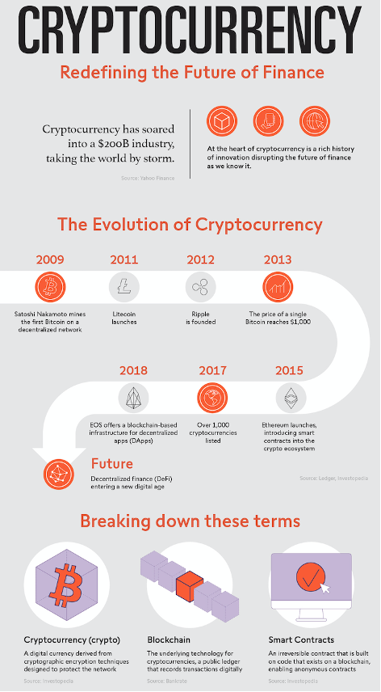
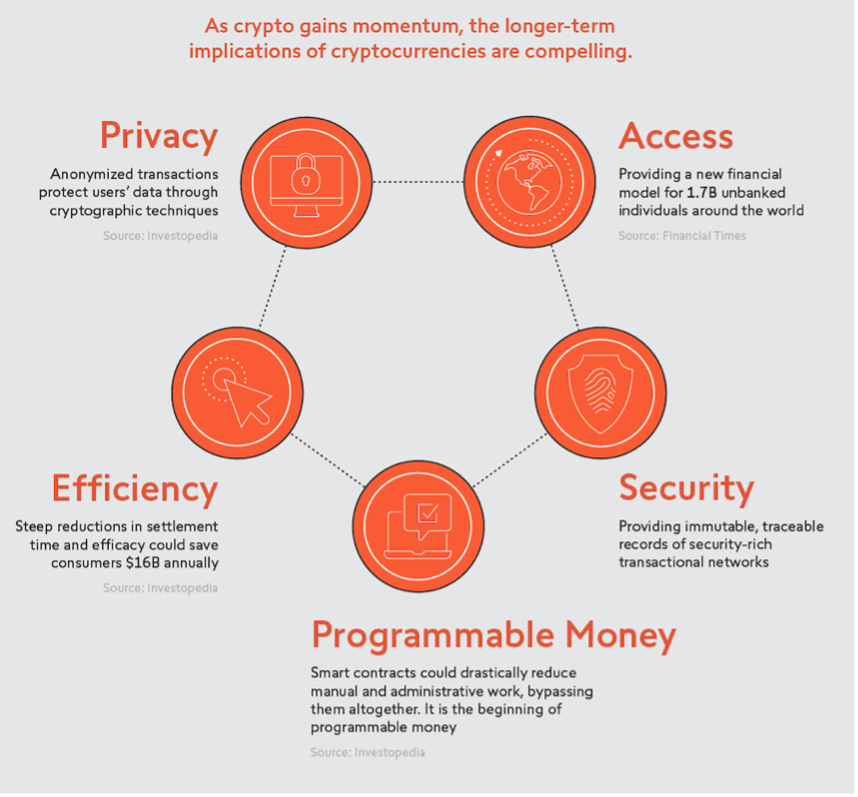
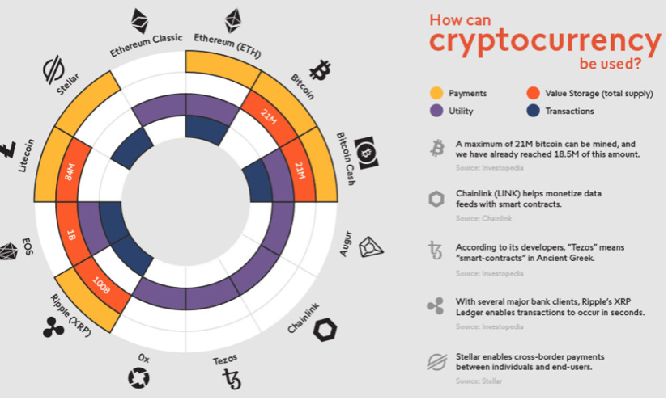
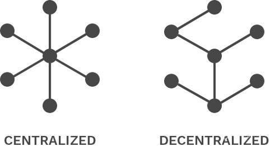
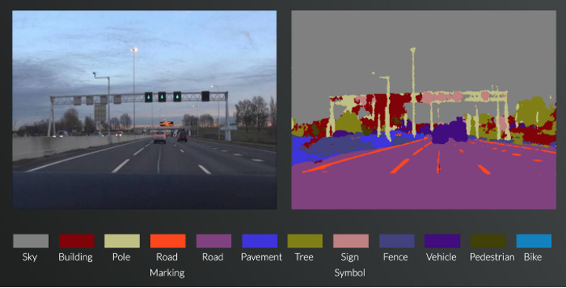

IT Technologies Technologies
Our research on various technologies and their impact on society.
Contents
Blockchain and cryptocurrencies
What does it do?
Cryptocurrency is a form of digital currency created from code. Cryptocurrency could be a digital payment method that does not depend upon the banks to verify transactions, alternatively, then being physical money that has to be carried around and exchange for goods and services. Cryptocurrency payment essentially only exists as a digital entirety to an online database.
Cryptocurrency utilises blockchain technology. Blockchain technology refers to a form of database. Database stores a body of data/ information electronically onto an automatic data processing system which mainly stores information into a table format. By storing in such form, it allows data to promptly be searched and filtered. Though blockchain is referred as a sort of database, it differs within the way data it's structured. Blockchain collects data together into groups mentioned as ‘blocks’, this is often set information. These blocks have a limited capacity and after they're filled, they're linked the too previous filled block, somewhat like how DNA is linked. Hence the term ‘Blockchain’ comes from the conjoining of filled blocks. The strategy of blockchain is when a replacement transaction is entered the transaction is then transmitted to a network of computers scatted across the world. Thus, networks of computers then solve equations to substantiate the validity of the transaction. The transaction then becomes complete. These blocks are then chained together creating as long history of all transactions that are permanent. Once confirmed to be legitimate transactions, they're clustered together in to blocks.
Bitcoin is a digital currency created in 2009 by Satoshi Nakamoto. Its main objective is to supply the promise of lower transaction fees when put next to traditional bank transfer fees like government issued currencies. Bitcoin runs as a decentralised system which records transactions into a distributed ledger referred to as ‘blockchain.’ Decentralised system was first made possible due to blockchain technology, with the first ever blockchain being ‘Bitcoin.’ A decentralised system implies the exclusion of one central owner when compared to a centralized system. decentralised system uses multiple central owners, each individual owner usually has a copy of information users can access. Hence when somebody sends bitcoin to another person, the transaction isn’t verified by one centralized command. Alternatively, anybody can hook up their laptop/computer to the bitcoin system to aid in the verification in the movement of funds. Furthermore, there are thousands independent systems helping to operate the network.
Due to the nature of bitcoin’s blockchain being decentralized, all transactions are transparently viewed by either having a ‘personal node’ (is a tiny, wallet sized device that integrates people into the net.) or with the employment of ‘blockchain explorer’ (severs as an exploration engine for data within a blockchain network and allows users to access different details referring to transactions on specific wallet addressees and blockchains.) That permits anyone to work out transactions occurring live. Each node has its own copy of the chain that gets updated as fresh filled blocks are confirmed and added. This mean that if you wanted to, you could track bitcoin when and wherever it goes.
Blockchain technology accounts for the problems of security and trust in a magnitude of ways. First, new blocks are always stored linearly and chronologically. After a block has been added to the tip of the blockchain, it's very difficult to travel back and alter the contents of the block unless the bulk reached a consensus to try and do so. Therefore it is harder to make alteration to benefit one another.
What is the likely impact?
In this day and age, Cryptocurrency has become one of the biggest currencies, with the violate rise of Bitcoin many people have shown interest and the prospect of cryptocurrency. Cryptocurrency will continue to evolve until it become the mainstream currency around the world. As seen on the news, Cryptocurrency is starting to become a payment method. E.g., Bitcoin. With people such as Elon Musk allowing people to use ‘Bitcoin’ as a viable method of payment. There is no extent to what crypto is capable of. As cryptocurrency is a convenient and practical way to make transaction that does not depend upon the banks to verifying transactions, it has become a topic of debate. Not only due to its prompt digital payment but also is security aspect.
Cryptocurrency offers blockchain technology which records transaction in to blocks and times stamps them, thus it is less likely to be hacked. In addition, transactions require two step verifications. Cryptocurrency has made its marks on the economy, politics and social life of individuals. Even to this day, poverty still remains unacceptably high, worldwide and it is increasingly clear that the benefits of economic growth have hasn’t been shared evenly across regions and countries. Alongside with economic chaos, civil wars and governmental collapse, poverty is driven by economic factors.
Cryptocurrencies can provide a significant benefit for overcoming the lack of social trust. By increasing the access to financial services, it can act as a medium to support growth in developing countries by increasing financial inclusion, providing better traceability of funds and to assist people find the way through poverty. Cryptocurrency is taken into account to be advantageous within the developing countries because of its transparency, which allows trust free interaction between respective each other. this can be feasible thanks to blockchain technology, providing better traceability of funds and to help people find a way through poverty. This Is a safer means of payment as it is decentralized, hence forth, it is not managed by the government.
People have considered that all cryptocurrencies need exchanged traded funds (EFT), as it would improve the efficiency for people investing in crypto(bitcoin).
How will this affect you?
Considering how popular cryptocurrency is these days, I have already considered to invest money onto it. In my daily life I would consider as a way to invest money for the future. e.g., waiting for a currency to hit it big like how ‘bitcoin’ did. Other than that, did does not affect me personally in a considerable manner. In the future I believe cryptocurrency will be used more as a form of payment for goods and services. Cryptocurrency has It already made its way as a method to purchase a car, hence will likely see an increase in the way it can be used. In the future cryptocurrency could be used by my family as a means of giving money overseas because it may be easier and would have lower fees.
Machine Learning
What does it do?
Machine learning is considered as a division of artificial intelligence primarily focused on the development of computers to automatically learn from data and improve it's own function accuracy overtime without having the need to be programmed to do so. This is mainly done using highly complex algorithms which are fed or exposed to large amounts of data until the machine can recognise key features and patterns from the data set. After collating data, the machine is then able to make decisions when exposed to a new set of data provided and improve in accuracy and decision making over time autonomously.
Machine learning is split into two main types: Supervised and Unsupervised learning.
Supervised learning refers to teaching machines by means of example, this implies showing machines data and assigning a label to the data so that the machine can recognise and distinguish what data it is looking at and perform an action based on the data it is given. However, teaching these machines to a competent level of accuracy typically requires enormous amounts of data and up to millions of examples in order to perform one task. For example, Facebook had taken 1 billion publicly available photos off of Instagram with assigned hashtags in order to teach train its image recognition networks which was then benchmarked on ImageNet with only a 85.4% accuracy (Medium, 2021).
Unsupervised learning is when machines are left with algorithms to identify patterns in data, gathering similarities or differences that split the data into categories. Machines that use unsupervised learning are mainly tasked to group data together and single out anomalies rather than pinpoint specific data as done in Supervised learning.
What is the likely impact?
Machine learning has already been applied into many of the apps we use day to day. Google Maps uses the location data we provide when traveling alongside historical data to better optimise and predict shorter routes to save us from avoiding traffic in real time. Virtual Assistants have also grown in popularity, using speech recognition and natural language processing to help aid users without the need for hands on ability. Leading phone makers such as Apple and Samsung integrate virtual assistants with all their products. Online shopping and content recommendation has also evolved thanks to machine learning, by tracking your history and recording what you browse and consume, platforms such as Amazon and Google will place ads more tailored to your searches. Roughly 35% of Amazon’s revenue is generated using product recommendations (Castelo, 2021).
Self-driving cars and autonomous vehicles are quickly growing to become one of the most popular fields in machine learning. State of the art algorithms such as Semantic Segmentation using HRNet-OCR by Nvidia and Object Detection using the Efficient-Det D7x technique by the Google Brain Team, (Analytics Insight, 2021) have aided in the increased accuracy and speed of computer vision applications. This means that the cameras on autonomous vehicles will be able to identify and classify more objects and make sense of that data almost instantaneously increasing the ability to avoid collisions and accidents arguably better than a human can.
Within the near future, it is expected that the development of Machine Learning technology will not be vastly different to where it is now. The only difference being that we will be able to feed algorithms greater amounts of data available and that the advancement of computer hardware will allow us to create more complex neural networks. Lukman Ramsey, a global solutions manager at Google states that if we can sustain progress we could lead to the development to “true” or “strong” artificial intelligence at which point would be almost equivalent to a human’s intellectual capabilities (Forbes, 2021).
There are many positive impacts in which machine learning will enable for society, mainly the ability to model and analyse massive amounts of data to make predictions on challenging topics such as climate crisis, risk assessment and simulations as well as helping to diagnose patient illnesses. These tasks which would take months of research to produce any usable data could be done through machine learning in a matter of weeks, allowing researchers to focus their attention on the next step as soon as possible in such time sensitive matters.
It must also be noted that the main resource required to grow and train a machine in order to achieve high levels of accuracy is the data itself. If the data that the machine receives would be biased towards machines, there would be a possibility that the machines may learn to lean themselves away from the interests and moral compass of humans and function on a purely logical framework. This would also be true if a machine were to learn from faulty data, leading to results that would not be as intended.
Self-driving cars and automated transportation will become common if deemed safe enough for use in society. However, there are inherent risks involved when allowing a machine to pilot a vehicle with a human being as a passenger. There is also the legal implications of who is to blame for the death of a person either by being hit by an autonomous vehicle or dying as a result a malfunction from the autonomous vehicle. Nevertheless, if autonomous vehicles are to become the social norm, modern day taxis, trains and trams may one day all be piloted by a machine creating redundancies and labour reforms.
Semantic Segmentation with SegNet from https://mi.eng.cam.ac.uk/
How will this affect you?
Machine learning already impacts our daily lives, Google Maps provides roughly 1 billion kilometres of alternate routes daily (Review42.com, 2021), I personally use google assistant to help me navigate my calls and messages whilst I drive and my social media feed on Facebook has been tailored to suit my interest through the use of machine learning. The implications of the future for machine learning does not have too heavy of an impact on the everyday citizen, if anything, the functions that are available commercially would only improve as they are fed more data over time and machine processors become more efficient. This would also be true when looking at the benefits machine learning has in the medical and financial industries to help look through large amounts of already provided data to detect patterns which would help a professional reach a more informed decision.
So long as machine learning is used as a tool to aid humans in their lives and help society progress, I have no objections to the effectiveness that machine learning is able to provide. However, there is always the inherent risk that our creations will be able to become self-sufficient and no longer need humans to feed it data. At which point we must ask ourselves if machine learning is still a tool that serves us or a sentient being that wishes to harm us.
Raspberry Pis, Arduinos and other small computing devices
What does it do?
Raspberry Pis are a series of small low-cost single-board computers, with ARM-compatible CPU and GPUs. First released to the public in February 2012 (Gibbs 2015), they exploded in popularity to become “the best-selling British computer ever” (Banks 2015, para. 1). Intended to “help a new generation discover programming” (Cellan-Jones 2011, para 1), the devices gained interest from hobbyists of all ages, as well as “educational institutions … and the industrial sector … [who] used [it to] power various machines and control systems.” (Banks 2015, para. 3). This flexibility in use cases, from small hobbyist projects, to running web servers and powering machinery, shows why the Raspberry Pi has been so popular among multiple demographics. The developments in the computing space in the last few decades have enabled such a powerful and versatile machine to thrive, while being low-cost and very power efficient. The Raspberry Pi can be used to run ARM-compatible OSs, including Debian, Ubuntu, RISC OS, Windows 10 IoT Core and CentOS, which allow the user to run a variety of software for the user’s use case. For example, educational institutions would most likely use Debian or Ubuntu, as they are fairly user-friendly and thus easier for the students to grasp. Raspberry Pis have also become popular with home automation hobbyists, as the strong community support and the power efficiency allow for a budget computer that can run all the time and is compatible with many programming languages, such as Python, without consuming a vast amount of electricity. In the near future, the Raspberry Pi will only get more powerful, due to advances in computing technology, allowing for more demanding use cases to function on the low-cost hardware.
Arduinos are a family of single-board microcontrollers, based on 8-bit and 32-bit processors, primarily used for low-power applications that interact with the user’s environment, through sensors and actuators. (Kushner 2011). Initially released in 2005, for the use of one of the founder’s students, it has since exploded in popularity to become “the most influential open-source hardware movement of its time” (Kushner 2011, para. 3), as the open-source nature of the software and the hardware make the Arduino very accessible to everyone, enabling even lower cost clones to be made. People have made many useful solutions with the Arduino, including automated pet feeders, breathalysers, automatic sensor-activated lights, wireless weather stations and many more. The continual advancement of processor technology means that the Arduino will continue to become more powerful and/or cheaper, enabling even more use cases. The user-friendly IDE (Intergrated Developer Environment) also contributed to the popularity of the Arduino, as the plug and play functionality of the board meant that all you need to start using the Arduino was the board itself, a USB cable and a computer to program it, whereas other boards like the BASIC Stamp required many more accessories to start using the board (Kushner 2011)
There are many other small computing devices that exist. For example, there are the Orange Pi, Banana Pi and the Pine64 Rock64, which all use ARM CPUs, and are designed as more powerful or smaller alternatives to the Raspberry Pi for different use cases. There’s also the so-called “$9 [USD] … computer” (Moore 2015) known as C.H.I.P, released by the Next Thing Co. (since defunct) that was based on ARM technology, as an ultra-cheap competitor to the Raspberry Pi. It was capable of running Linux, and thus capable of browsing the web, using word processing software and much more. The Makey Makey is an Arduino Leonardo-based microcontroller designed to emulate a keyboard or mouse input, and has been used to make musical instruments of random, conductive fruit, like bananas. The original version of the board was open source, but the second and third revision were closed source and non-programmable (Unknown, n.d.).
What is the likely impact?
One of the main things that come out of the creation of the Raspberry Pi, is that it creates a hobby for people. As it is affordable, people of all ages can purchase the credit card sized computer and begin (or continue) their journey into the IT world. Not only can it create hobbies for people of any age, but it can get kids prepared for the future of technology at an early age. This can be a good way for kids to learn programming as it involves a hands on way of learning which can be fun for kids. In later school years, Raspberry Pi’s could be used in practical classes to teach older school kids the basics of software development if they choose.
The main people that were affected by the creation of the Raspberry Pi were beginners in software development / Programming and hobbyists who enjoy creating devices and other projects from scratch. Some schooling courses have already implemented the use of Raspberry Pis to teach young kids basic programming skills. Thus, Raspberry Pi’s have introduced more jobs for the community, teachers who can walk the students through how to use the raspberry Pi and teach them some IT skills. If not at schools, another opportunity has opened for IT professionals and /or Advanced level individuals, to create explanation videos and instructions on how to create different devices.
How will this affect you?
Currently in my everyday life I have no need for a Raspberry Pi, but in my future everyday life, the Raspberry Pi could give me quite a significant advantage in my studies. Due to its low cost, it is a cheap method to increase my programming knowledge and skills and learn more about how to create a functioning device. It will allow for me to gain a better grasp on programming and software development stages as it will allow for me to get a hands-on experience, building a system, rather than learning how to do so through only online tutorials and videos. Not only for me, but for my friends and others who are just starting out in the IT field who want an affordable and hands-on way of learning to program, the raspberry Pi would be a great option. Personally, for me, if I am ever required to develop a system or software for an assessment, my first thought would be to use a Raspberry Pi.
There are no immediate affects that would take place when first discovering the Raspberry Pi other than knowing that it is always available to purchase if need be. This is the same for friends and family that are not in the IT field. For friends and family who are interested in the IT field, with the Raspberry Pi, they are able to create small projects that can potentially automate different things in their everyday life to help create an easier way of living. While it is easy for people to buy products that can increase efficiency in day to day activities, the Raspberry PI gives people the opportunity to feel the sense of achievement when a device that they have personally developed, accomplishes its desired task. Not only will this create a more efficient lifestyle, but it can create a hobby for those who choose to dig deeper into the IT world.